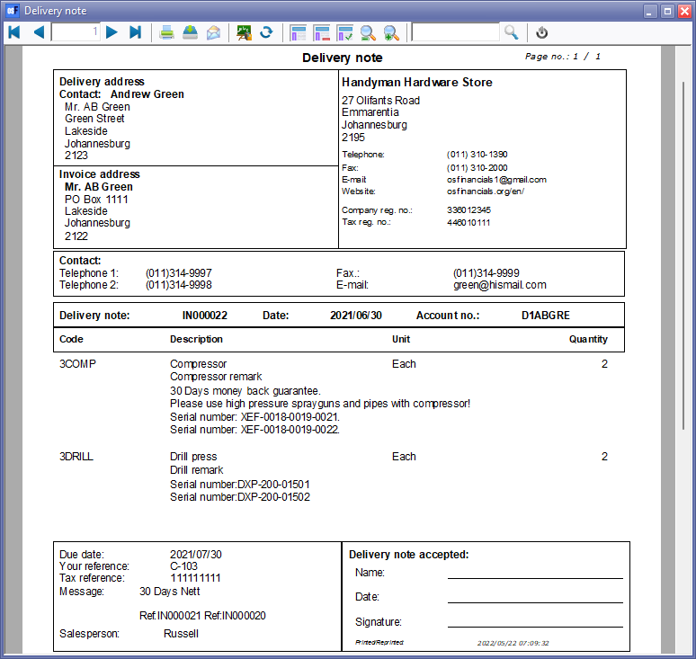

Document layout file - Delivery notes (Translatable)
What is a delivery note?
A delivery note, also known as a delivery receipt or packing slip, is a document used in the shipping and logistics industry to confirm the delivery of goods from a seller or supplier to a buyer or customer. It serves as a record of the items that have been delivered, their quantities, and their condition at the time of delivery. Here are some key points about a delivery note:
- Contents: A delivery note typically includes information such as the names and addresses of the sender (supplier) and the recipient (buyer), a list of the items being delivered along with their descriptions and quantities, any special handling instructions, and any additional notes relevant to the delivery.
- Purpose: The primary purpose of a delivery note is to provide both the sender and the recipient with a record of the goods that have been shipped and received. It acts as proof of delivery and can be used to resolve any disputes or discrepancies that might arise regarding the delivered items.
- Reference: Often, a delivery note will include a reference number or code that can be used to cross-reference the delivery with corresponding sales orders, purchase orders, invoices, and other related documents.
- Internal and External Use: Delivery notes are used internally within the shipping and receiving departments of a company to ensure that the correct items are dispatched and received. They are also provided to the recipient to assist with inventory management and quality control.
- Legal and Financial Implications: Delivery notes may have legal and financial implications. For instance, they can be used as evidence in cases where disputes arise over the condition, quantity, or timeliness of a delivery. They can also be used by the recipient to check against their purchase orders and invoices to ensure accurate billing.
- Variations: The specific format and information included in a delivery note can vary based on the industry, company policies, and local regulations. Some businesses may choose to include additional details such as batch numbers, serial numbers, barcodes, and more.
In summary, a delivery note is an essential document that helps ensure the smooth flow of goods between suppliers and customers. It provides a clear record of what has been delivered, aiding in accuracy, accountability, and transparency in business transactions.
Exclude / Include prices in a delivery note
It is a common practice to exclude prices from a delivery note, particularly for security and confidentiality reasons. Including prices on a delivery note can have several potential drawbacks:
- Confidentiality: Prices can be sensitive information, and sharing them on a delivery note could potentially expose sensitive financial details to unintended recipients, such as third-party logistics providers, warehouse staff, or even competitors.
- Customer Relations: If a delivery note with prices falls into the hands of the recipient's customers or clients, it might cause confusion, privacy concerns, or even harm the business relationship by revealing pricing agreements.
- Theft and Fraud Prevention: Excluding prices from delivery notes can help reduce the risk of theft and fraud. If unauthorized individuals gain access to delivery notes with prices, they might exploit the information for illicit purposes.
- Data Protection: Many countries have data protection regulations that require businesses to handle personal and sensitive data with care. Exposing pricing information unnecessarily could potentially violate these regulations.
- Focus on Delivery: Delivery notes are primarily used to confirm the receipt of goods and their condition. Excluding prices allows both the sender and the recipient to focus on verifying the accuracy of the items received rather than getting distracted by financial details.
While excluding prices is a common practice, it's essential to ensure that the delivery note contains enough information for the recipient to accurately verify the delivered items. Including details such as references, item codes, descriptions, quantities, unit measurements, and any relevant comments is crucial for efficient inventory management and reconciliation.
Ultimately, the decision to include or exclude prices on a delivery note should be based on your business's specific policies, industry norms, and the need to balance security and transparency in your business operations.
Delivery notes is usually sent to customers and to creditors for returns
Sending delivery notes to both customers and creditors for returns is a common practice in business transactions. Here's how the process typically works:
- Debtors (Customers/Clients):
- Outgoing Deliveries: When you send products to customers, you provide them with a delivery note along with the shipment. The delivery note contains details about the items being delivered, their quantities, descriptions, and any other relevant information.
- Returns: If a customer wants to return items to you, they would typically include a copy of the delivery note that was sent with the original shipment. This helps you verify the returned items against the original delivery and ensures accuracy in the return process.
- Creditors (Suppliers/Vendors):
- Incoming Deliveries: When you receive goods from your suppliers or vendors, they might send a delivery note along with the shipment. This note provides you with information about the items you've received, quantities, descriptions, and potentially other details like batch numbers.
- Returns to Suppliers: If you need to return items to your suppliers due to defects, errors, or other reasons, you can include a copy of the original delivery note (if available) to indicate the items being returned and their quantities. This helps the supplier process the return efficiently.
In both cases, the primary purpose of the delivery note is to ensure transparency and accuracy in the movement of goods. Including essential details like references, item codes, descriptions, quantities, and any relevant comments ensures that both parties have clear records of the transactions.
While it's common to exclude prices from delivery notes to maintain security and confidentiality, the exact content and format of the delivery notes can vary based on your business's practices and industry norms. The key is to provide enough information for easy verification and processing of shipments and returns while protecting sensitive information.
Features: Delivery note
This Delivery note document layout file is a document template used to create delivery notes that can be adapted to various languages. This layout file would allow you to generate delivery notes in different languages while maintaining a consistent structure and design. Here's a breakdown of what this might entail:
- Purpose: The purpose of a translatable delivery note document layout file is to provide a template for creating delivery notes that can be easily customized to display information in different languages. This is particularly useful when dealing with international clients, suppliers, or partners who prefer to receive documents in their native language.
- Translatable Elements: The layout file would incorporate translatable elements, such as placeholders or expressions, which dynamically populate with the appropriate content based on the language settings or preferences.
- Dynamic Language Switching: The layout file might be designed to switch between different languages based on the language settings associated with the recipient's account or the specific transaction. For example, if you're sending a delivery note to a customer with a preference for French, the layout file could render the content in French.
- Customizable Fields: The layout would include fields for essential information such as item codes, descriptions, quantities, and any other relevant details specific to delivery notes.
- Consistent Layout: While the content within the delivery note might change based on the language, the overall layout and design would remain consistent. This ensures professionalism and brand coherence.
- Adaptability for Different Document Types: The same translatable delivery note document layout file might be used as a foundation to create other similar documents, such as return notes or order acknowledgements.
- User-Friendly Customization: Users could easily customize the translatable elements, language expressions, and placeholders to adapt the layout for their specific needs.
In summary, a translatable delivery note document layout file simplifies the process of generating delivery notes in different languages, ensuring effective communication with recipients from various linguistic backgrounds while maintaining a unified visual identity.
Preview of Available Translatable Delivery Note Document Layout Files
This delivery note document layout files includes a versatile and dynamic option that caters to a wide range of language preferences and customisation needs. This translatable delivery note layout is powered by our language files feature, ensuring seamless translation of content across various languages. Not only does it adapt to the default language of your Set of Books, but it also accommodates debtor and creditor language preferences when they differ from the default.
By selecting this translatable delivery note layout, you benefit from:
- Multi-Language Support: Your delivery notes can be generated in different languages, ensuring effective communication with recipients around the world.
- Debtor and Creditor Language Adaptation: When the language preferences of your debtors or creditors vary from the default, the layout dynamically adjusts to present the information in the preferred language.
- Consistent and Professional Layout: While the content changes with translation, the layout maintains a consistent and professional appearance.
- Customization Flexibility: Customize the layout to include essential details such as item codes, quantities, descriptions, and more, ensuring accuracy in every delivery.
This translatable delivery note document layout offers an advanced level of flexibility and adaptability, enhancing your communication efficiency with customers, suppliers, and partners across different linguistic backgrounds.
Feel free to adapt and adjust the description to match the specific features and benefits of your translatable delivery note document layout in osFinancials.

The "Delivery note" prints stock codes (of up to 15-digits – Maximum allowed creating stock items) and stock descriptions.
|
|
The name of this "Delivery note" document type is translatable in the "LabelID 1313" in the Language file as expression "CUSTOM('GETTEXTLANG',1313,'DeliveryNote',CLIENTORDEFLANG.SLANGUAGE,0,0)". |

Document layout files supports additional languages for Debtors / Creditors
The translatable "Delivery note" document layout file is a feature designed to accommodate multiple languages within osFinancials. These files facilitate printing documents in either the chosen language or the default language associated with the Set of Books. Additionally, these translatable document layout files take into account language preferences specified for debtor (customer/client) or creditor (supplier/vendor) accounts, including international ones.
In osFinancials, users have the flexibility to designate a particular language for debtor or creditor accounts:
- Debtors: When a specific language is assigned to a debtor account, osFinancials will print document layout files for sales-related documents (such as invoices, credit notes, quotes, and point-of-sale invoices) in the debtor's preferred language.
- Creditors: If a specific language is set for a creditor account, osFinancials will print document layout files for purchase-related documents (including purchase orders, supplier returns, and orders) in the preferred language of the creditor, whether they are domestic or international.

This feature ensures that financial documents align with the language preferences of both customers and suppliers, enhancing communication and clarity for a diverse range of business interactions and in regions with multiple languages. For instance, in a country like South Africa, documents can be generated in languages like Afrikaans or English..